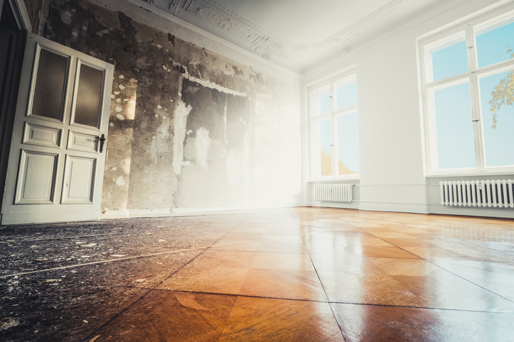

When disaster strikes—whether it’s a burst pipe, storm damage, fire, or mold—your first instinct may be to wait before calling for professional help. Maybe you’re hoping the problem won’t get worse, or you’re worried about costs. But the truth is, delaying restoration can lead to far greater damage and higher expenses in the long run. At SWAT Restoration, we’ve seen firsthand how fast small issues can turn into major problems.
Water doesn’t stay put. It seeps into walls, floors, and foundations, weakening structures and creating the perfect breeding ground for mold. Within 24–48 hours, mold spores can begin to spread, turning a minor cleanup into a full remediation project.
Mold exposure can trigger allergies, asthma, and other respiratory issues. What starts as a musty smell can quickly become a serious health hazard, especially for children, the elderly, and those with compromised immune systems.
Even after a fire is out, smoke and soot linger. These particles can corrode electronics, stain surfaces, and leave odors that are nearly impossible to remove without professional equipment. The longer you wait, the deeper the damage sets in.
Most insurance companies require quick action to minimize damage. Delaying restoration can complicate your claim—or even result in a denial. SWAT Restoration helps you document damage right away so you’re covered fairly.
A small roof leak can become a collapsed ceiling. A minor pipe leak can turn into major foundation damage. The sooner you call, the more money—and stress—you save in the long run.
At SWAT Restoration, we’re not just contractors—we’re first responders for home disasters. Our team is local, family-owned, and committed to serving North Texas families with integrity and care. We respond fast, handle everything from cleanup to insurance coordination, and restore your home or business to better than before.
When it comes to disasters, time is never on your side. The sooner you act, the easier, safer, and more affordable the recovery process will be.
Don’t wait—call SWAT Restoration today. We’re here 24/7 to protect your property, your health, and your peace of mind.